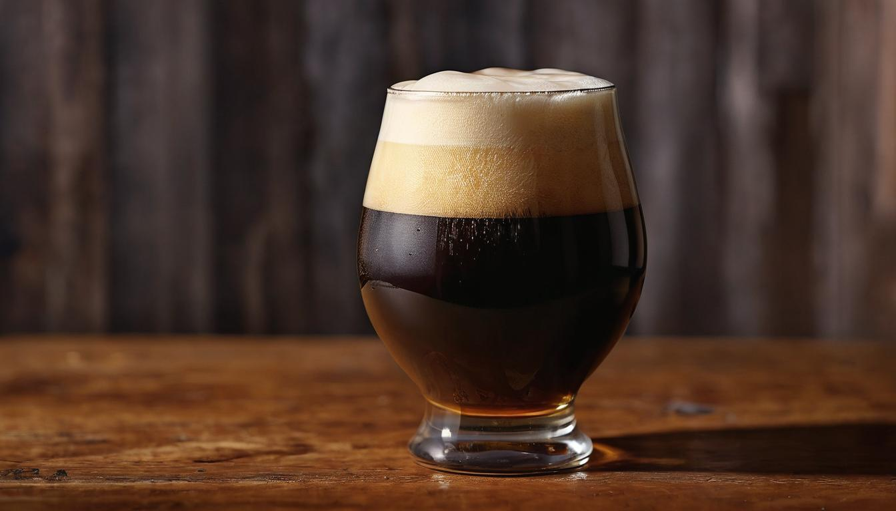
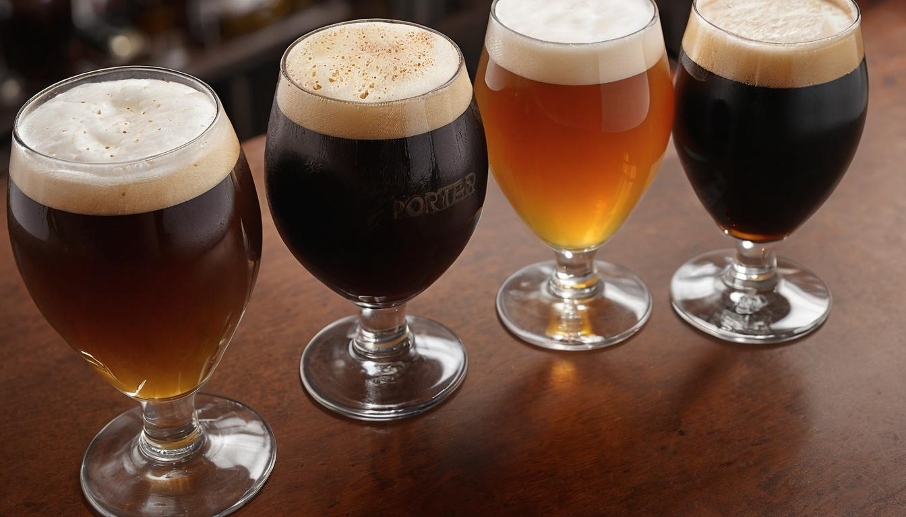
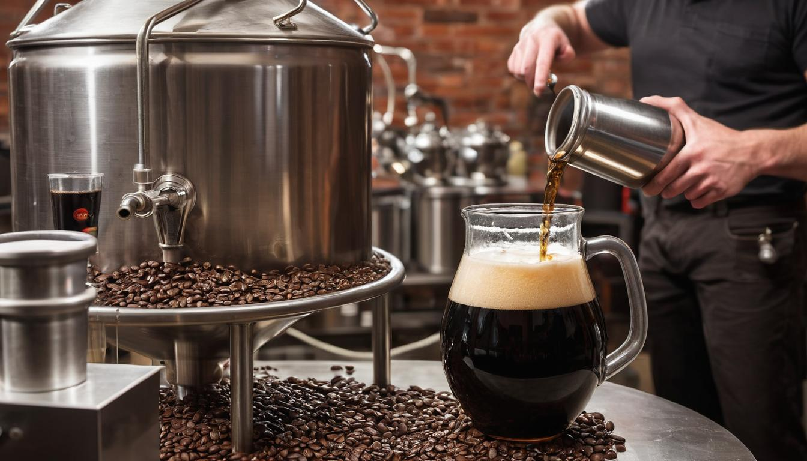

Dark Flavorful Porter Beer
Porter beer has a rich tapestry woven through the heart of London's bustling 18th-century streets. Initially loved by laborers and street porters alike, this dark brew was celebrated for its robust taste, which came from brown malt. By relishing these hearty flavors, you're not just enjoying a drink but stepping into a piece of history.
Understanding porter beers isn't just about savoring them; it's about knowing their evolution, styles, and brewing secrets. Our comprehensive guide will walk you through each step—from traditional ingredients to precise brewing techniques—ensuring your homebrew captures this rich legacy. To truly appreciate Porter beer is to recreate its masterful complexity at home, where you'll discover why even legendary brewers like Arthur Guinness began their journeys with this timeless ale.
A porter is a dark and flavorful style of beer that originated in England. It typically features a combination of malted barley, including roasted grains like chocolate malt or black patent malt, resulting in a rich color and complex flavor profile. Some tips for brewing a porter include using a variety of malted barley to achieve complexity in flavor and carefully selecting hops that complement the malt profile.

Historical Origins of Porter
Picturing the bustling streets of 18th century London, with the air filled with the aromas of roasted grains and the sound of laborers going about their daily work, one can truly appreciate the historical origins of porter. This dark, hearty ale was crafted for the working class, especially porters and transportation workers, from which it derived its name.
Evolution of Flavor
Early iterations of porter were characterized by their robust and full-bodied flavors, attributed to the distinctive use of brown malt. As time progressed, so did the art of brewing. By the mid-18th century, brewers creatively experimented with different techniques, one of which involved adding aged or "stale" beer to the mix. This innovative approach elevated the flavor profile of porter, resulting in a more complex and nuanced taste that captivated enthusiasts across London.
Contribution of Arthur Guinness
An essential figure in porter's brewing history is Arthur Guinness himself. Before venturing into stout brewing, Guinness mastered his craft by meticulously producing porters that left an indelible mark on the industry. Through his innovation and dedication to perfection, Guinness played a pivotal role in showcasing the versatility and potential of porters, setting the stage for future advancements in brewing techniques.
The evolution and legacy of porter beer exemplify its enduring influence on brewing traditions, tracing back to its humble origins as a beverage cherished by hardworking laborers in 18th century London.
As we continue our exploration of the world of brewing, let's turn our attention now to examine in detail the key ingredients that contribute to the distinct character of porter beer.
Key Ingredients in Porter Brewing
When you think about porter beer, rich and robust flavors come to mind. These layers of taste are crafted from a careful selection of key ingredients. Let's unravel the magic starting with malt.
Malt
To begin with, let's talk about the star player in the world of porter brewing - malted barley. Malted barley forms the backbone of porter beers, usually including a combination of pale malt and an assortment of roasted malts such as chocolate malt and black patent malt. These diverse malts not only contribute to the rich color of porter but also bring out the distinct roasted flavors we all know and love.
Moving on to hops, we confront another essential ingredient that adds depth to the character of porter beer.
Hops
In the world of porter brewing, traditional English hops like Fuggle or East Kent Goldings reign supreme. These hops introduce a gentle bitterness and earthy aromas that beautifully complement the malty sweetness and round off the overall flavor profile, creating a harmonious balance.
Now, let's shift our focus to a critical component in the fermentation process - yeast.
Yeast
English ale yeast strains take center stage in fermenting porter beers, contributing to delicate fruity esters that intertwine seamlessly with the rich malt flavors characteristic of porters. The result is a delightful symphony of flavors that add complexity and depth to this beloved beverage.
Lastly, let's not forget about an often overlooked hero – water.
Water
While it may seem simple, water plays a pivotal role in shaping the character of porter beer. Brewers often employ a higher sulfate to chloride ratio in their water composition to enhance hop bitterness and deliver a crisp, dry finish. This enables every sip of porter to pack a satisfying punch and leave behind a clean aftertaste.
By skillfully balancing these key ingredients – malt, hops, yeast, and water – brewers create porter beers renowned for their rich, complex flavor profiles. Each ingredient plays a vital role in shaping this iconic beer style, capturing the essence of centuries-old brewing traditions while also paving the way for exciting modern variations.
With a deeper understanding of the key ingredients behind porter brewing, it's time to explore the diverse styles stemming from this masterful concoction. Let's dive into the fascinating world of Diverse Porter Styles.
Diverse Porter Styles

When it comes to porter beer, the diversity within this style is truly fascinating. Let's start with the Baltic Porter. This variety is distinguished by its higher alcohol content, typically ranging from 7% to 9%. Unlike other porters, Baltic Porters are brewed with lager yeast, which contributes to a smooth and clean finish. From the first sip, you're likely to pick up delightful, rich notes of caramel and licorice that genuinely set it apart.
Now, onto the intriguing Robust Porter. As the name suggests, this style emphasizes boldness and intensity. It often boasts deep, captivating flavors of chocolate, coffee, and sometimes even a hint of smoke. Complemented by a medium to high hop bitterness, this type of porter tends to leave an impression that gets you coming back for more.
On the milder side of the spectrum sits the English Brown Porter, offering a more laid-back and sessionable experience. Though it may be more delicate than its robust counterpart, don't let that fool you. This style is chock-full of balanced flavors: Think caramel, toffee, and just a touch of light roasted malt that delicately intertwines to create a comforting and inviting brew.
Each of these variants possesses unique characteristics that showcase the incredible depth and versatility found within this iconic beer style.
This diversity in porter styles presents beer enthusiasts with an array of options to explore and savor. Whether it's the rich and complex Baltic Porter, the bold and intense Robust Porter, or the comforting and balanced English Brown Porter, there's truly something for everyone within the world of porters. So next time you're perusing the beer selection at your local brewery or pub, take a chance on a unique porter style and let your taste buds embark on a flavorful journey.
With our palates tingling from anticipation, let's now dive into the sensory delights awaiting us as we partake in the delightful experience of drinking porter.
Sensory Experience of Drinking Porter
When you pour a porter into a glass, you're not just getting a drink. You're about to enter a world of flavors and scents that'll make your taste buds dance! Let's break down the sensations that make drinking porter such a unique experience.
Appearance
A porter typically appears dark brown to black with a creamy, tan head, giving it a striking and inviting look that sets the stage for the sensory experience about to unfold.
Aroma
The aroma is where it all begins—the first whiff sets the stage for what's to come. As you bring the glass to your nose, you'll encounter a delightful blend of roasted coffee, rich chocolate, and sweet caramel notes. Sometimes, there might even be hints of toffee or a subtle smokiness, adding layers of complexity to the aromatic experience.
Taste
Now, let's talk about the best part: the taste. When you take your first sip, you'll notice rich, deep flavors unfolding on your tongue. Roasted malt takes center stage, accompanied by velvety smooth chocolate and robust coffee. These flavors are often balanced by a hint of sweetness and mild bitterness, creating a complex and well-rounded palate.
Mouthfeel
The mouthfeel of a porter is an essential part of the experience. It's generally smooth and medium-bodied, giving you a comforting warmth that feels just right—especially on chilly evenings. This texture enhances the overall enjoyment of the beer, making it feel like more than just a drink—it becomes an experience in itself.
Every element of drinking porter—from its appearance to its aroma and taste—contributes to an immersive sensory journey that enriches every sip. It's no wonder that enthusiasts find so much joy in exploring the nuanced world of porter beer.
Now that we've explored the intricate sensory adventure of enjoying a well-crafted porter, let's turn our attention to the vessel that complements this experience—the ideal glassware for savoring this distinguished brew.
Ideal Glassware for Porter
The right glassware can truly elevate your porter-drinking experience, enhancing both the visual and aromatic aspects of the beer while also influencing its taste. Among various options, the Nonic pint glass is highly recommended for serving porter. This classic English glass features a slight bulge near the top, which not only makes it easy to hold but also prevents chipping. The wide bowl shape of the Nonic pint glass enhances the aroma and allows for better head retention, providing the drinker with a full sensory experience with each sip.
Additionally, the tulip glass is another excellent choice for enjoying porter. With its unique shape and narrower opening, it concentrates the beer's aromas, resulting in a more intense and immersive flavor experience. This concentration of aromas allows for a deeper exploration of the complexities within the porter, enriching the overall drinking experience.
For those who prefer a more traditional approach, a classic beer stein or mug can also be used to serve porter. These sturdy and robust vessels emphasize the beer's strong and robust character while offering a reliable and comfortable grip. They provide a sense of authenticity and timelessness to the porter-drinking experience, adding an extra layer of enjoyment for beer enthusiasts.
In selecting the ideal glassware for porter, it's essential to consider how different shapes impact the aroma, flavor, and overall presentation of the beer.
Ultimately, choosing the right glassware is not just about aesthetics—it's about enhancing every aspect of enjoying porter. Whether it's the wide bowl shape of the Nonic pint glass capturing the aroma, or the intense flavor delivery of a tulip glass, or even the rustic elegance of a classic mug, each option contributes to an enriched sensory experience that elevates the appreciation of this beloved beer style.
Now equipped with an understanding of how the right glassware impacts your porter-drinking experience, it's time to turn our attention to perfecting the brewing process at home.
Brewing a Perfect Porter at Home

So, you've savored a few glasses of porter and now you're ready to try your hand at crafting this beer in the comfort of your own home. Here are the essential steps to master the brewing process and create a delightful batch of porter that will be the envy of your friends.
Step I - Selecting the Recipe
This step is where it all begins. The recipe you choose determines the flavor, aroma, and appearance of your brew. Decide whether you prefer a traditional English porter with its well-balanced maltiness or if you're feeling bold and want to experiment with a robust variation. Remember that the right recipe sets the stage for a successful brewing journey.
Consider visiting your local homebrew store or searching through reputable online resources for a tried and tested porter recipe. Read reviews and user comments to gauge the overall feedback on the recipe's success and any potential adjustments you can make based on others' experiences.
Step II - Mashing the Grains
Once you've settled on your recipe, it's time to start mashing those grains. This process involves soaking your grain in hot water to extract fermentable sugars, which will ultimately give your beer its character. Aim to maintain a mashing temperature around 150-155°F to strike the balance between extracting sugars without ending up with an excessively sweet brew.
Imagine this step as preparing a hearty stew—slow and steady cooking that draws out just the right mix of flavors and textures. A quality brew begins here, with careful attention to detail and patience.
Step III - Boiling and Hopping
After mashing, it's time for boiling and hopping. The wort (unfermented beer) needs to boil for about 60 minutes while hop additions are made according to your recipe's schedule. The aim here is to balance out the sweetness of the malt with the bitterness of hops, achieving that classic porter taste that hits all the right notes.
Think of this step as conducting a culinary orchestra – adding hops at precise moments to create a symphony of flavors in your porter.
Mastering the intricate art of brewing a delectable porter at home can be both rewarding and satisfying. With patience, precise execution, and a dash of creativity, you'll soon be savoring your homemade porter alongside friends and fellow beer enthusiasts.